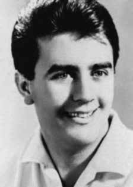

Eduardo
Collen
Leite
BIOGRAFIA
Guerrilheiro da luta armada contra a ditadura militar, mais conhecido pelo codinome “Bacuri”, foi o militante que, depois de preso, foi torturado por mais tempo pelos agentes da repressão, passando 109 dias nas mãos de seus algozes, sendo submetido a todo tipo de torturas até ser executado. Bacuri chegou a receber, na cela, um jornal que noticiava sua fuga da prisão. Ele permaneceu preso e incomunicável até sua morte. A versão dos militares é de que ele foi morto num tiroteio após escapar da prisão.
Iniciou sua militância bem jovem, integrando, inicialmente, a Organização Revolucionária Marxista Política Operária (Polop), em seguida a Vanguarda Popular Revolucionária (VPR), em 1968, e a Rede Democrática (Rede), em 1969. Posteriormente, passou a integrar a direção da Ação Libertadora Nacional (ALN).
Um dos mais ativos guerrilheiros nas ações armadas urbanas do período, participou dos sequestros do cônsul do Japão, Nobuo Okuchi, em São Paulo, e do embaixador alemão Ehrenfried von Holleben, no Rio de Janeiro, ambos no primeiro semestre de 1970. Depois disso, Bacuri foi preso no Rio de Janeiro por oficiais do Cenimar, o Centro de Informações da Marinha, em 21 de agosto de 1970.
Entregue pelos militares à equipe do delegado Sérgio Fleury, entre setembro e dezembro de 1970, foi constantemente levado a centros de interrogatórios do DOI-Codi de São Paulo e do Rio de Janeiro, a prisões e casas isoladas e ao presídio da Ilha das Cobras, no Rio de Janeiro, onde fez greve de fome e recusou atendimento médico, sendo brutalmente torturado e interrogado dezenas de vezes, sem nada dizer aos torturadores.
Sua mulher, Denise Crispim, viu-o pela última vez depois de ser retirada da cadeia do Dops , grávida de sete meses, e levada pelos homens de Fleury à delegacia do bairro de Vila Rica, em São Paulo. O marido estava algemado e com hematomas e queimaduras por toda a pele.
Considerado pela repressão como o mais perigoso dos guerrilheiros, foi assassinado em 8 de dezembro de 1970, no Forte dos Andradas, no Guarujá, em São Paulo, logo depois do sequestro do embaixador suíço Giovanni Enrico Bucher, no Rio de Janeiro. Eles o mataram para que não fosse libertado na troca de reféns, não apenas por sua importância, mas também pelo estado físico a que havia sido reduzido pelos torturadores. Bem antes disso, ele já não tinha mais o movimento das pernas por causa das torturas – para as quais era levado arrastado – a que vinha sendo submetido.
Seu corpo, encontrado no litoral de São Sebastião, São Paulo, foi entregue à família num caixão lacrado, na tentativa de esconder o que ele havia sofrido nas mãos dos torturadores. Porém, seus familiares o abriram e se depararam com um Bacuri desfigurado, com orelhas decepadas, inúmeras queimaduras, hematomas, dentes arrancados, olhos vazados, dois tiros no peito e dois na cabeça.
Em junho de 2011, foi lançado o livro “Eduardo Leite, o Bacuri”, da jornalista Vanessa Gonçalves, uma biografia de sua vida que se desdobra com mais detalhes em seus 109 dias na mão dos torturadores. Em 2013, a diretora e atriz portuguesa Maria de Medeiros lançou o documentário Repare bem, que resgata a trajetória da ex-companheira de Bacuri, Denise Crispim, e de sua filha Eduarda Ditta Crispim Leite.
A guerrilla in the armed struggle against the military dictatorship, better known by the code name “Bacuri”, he was the militant who, after being arrested, was tortured for the longest time by agents of repression, spending 109 days in the hands of his executioners, being subjected to all types of torture until he was executed. Bacuri even received, in his cell, a newspaper that reported his escape from prison. He remained imprisoned and incommunicado until his death. The military's version is that he was killed in a shootout after escaping from prison.
He began his activism at a very young age, initially joining the Revolutionary Marxist Political Workers Organization (Polop), then the Vanguarda Popular Revolucionária (VPR), in 1968, and the Democratic Network (Rede), in 1969. Later, he joined the leadership of Ação Libertadora Nacional (ALN).
One of the most active guerrillas in urban armed actions of the period, he participated in the kidnappings of the Japanese consul, Nobuo Okuchi, in São Paulo, and the German ambassador Ehrenfried von Holleben, in Rio de Janeiro, both in the first half of 1970. After that, Bacuri was arrested in Rio de Janeiro by officers from Cenimar, the Navy Information Center, on August 21, 1970.
Handed over by the military to delegate Sérgio Fleury's team, between September and December 1970, he was constantly taken to DOI-Codi interrogation centers in São Paulo and Rio de Janeiro, to prisons and isolated houses and to the Ilha das Cobras prison, in Rio de Janeiro, where he went on a hunger strike and refused medical attention, being brutally tortured and interrogated dozens of times, without saying anything to the torturers.
His wife, Denise Crispim, saw him for the last time after being taken from the Dops jail, seven months pregnant, and taken by Fleury's men to the police station in the Vila Rica neighborhood, in São Paulo. The husband was handcuffed and had bruises and burns all over his skin.
Considered by repression as the most dangerous of the guerrillas, he was murdered on December 8, 1970, at Forte dos Andradas, in Guarujá, São Paulo, shortly after the kidnapping of the Swiss ambassador Giovanni Enrico Bucher, in Rio de Janeiro. They killed him so that he would not be released in the hostage exchange, not only because of his importance, but also because of the physical state to which he had been reduced by the torturers. Long before that, he no longer had the ability to move his legs due to the torture – to which he was dragged – to which he was being subjected.
His body, found on the coast of São Sebastião, São Paulo, was handed over to his family in a sealed coffin, in an attempt to hide what he had suffered at the hands of his torturers. However, his family opened it and found a disfigured Bacuri, with severed ears, numerous burns, bruises, knocked out teeth, hollowed out eyes, two shots to the chest and two to the head.
In June 2011, the book “Eduardo Leite, o Bacuri”, by journalist Vanessa Gonçalves, was released, a biography of his life that unfolds in more detail about his 109 days in the hands of torturers. In 2013, Portuguese director and actress Maria de Medeiros released the documentary Repare bem, which covers the trajectory of Bacuri's ex-partner, Denise Crispim, and her daughter Eduarda Ditta Crispim Leite.
Guerrillero de la lucha armada contra la dictadura militar, más conocido con el nombre clave de “Bacuri”, fue el militante que, tras ser detenido, fue torturado durante más tiempo por agentes de la represión, pasando 109 días en manos de sus verdugos, siendo sometido a todo tipo de torturas hasta ser ejecutado. Bacuri incluso recibió, en su celda, un periódico que informaba de su fuga de prisión. Permaneció encarcelado e incomunicado hasta su muerte. La versión de los militares es que murió en un tiroteo tras escapar de prisión.
Inició su activismo desde muy joven, incorporándose inicialmente a la Organización Revolucionaria de Trabajadores Políticos Marxistas (Polop), luego a la Vanguarda Popular Revolucionária (VPR), en 1968, y a la Red Democrática (Rede), en 1969. Posteriormente, ingresó a la dirección de la Acción Libertadora Nacional (ALN).
Uno de los guerrilleros más activos en acciones armadas urbanas de la época, participó en los secuestros del cónsul japonés, Nobuo Okuchi, en São Paulo, y del embajador alemán Ehrenfried von Holleben, en Río de Janeiro, ambos en el primer semestre de 1970. Posteriormente, Bacuri fue arrestado en Río de Janeiro por oficiales del Cenimar, el Centro de Información de la Marina, el 21 de agosto de 1970.
Entregado por los militares para delegar el equipo de Sérgio Fleury, entre septiembre y diciembre de 1970, fue llevado constantemente a los centros de interrogatorio DOI-Codi en São Paulo y Río de Janeiro, a prisiones y casas aisladas y a la prisión Ilha das Cobras, en Río de Janeiro, donde inició una huelga de hambre y rechazó atención médica, siendo brutalmente torturado e interrogado decenas de veces, sin decir nada a los torturadores.
Su esposa, Denise Crispim, lo vio por última vez después de ser sacada de la cárcel del Dops, embarazada de siete meses, y conducida por los hombres de Fleury a la comisaría del barrio de Vila Rica, en São Paulo. El marido estaba esposado y presentaba hematomas y quemaduras en toda la piel.
Considerado por la represión como el más peligroso de los guerrilleros, fue asesinado el 8 de diciembre de 1970 en Forte dos Andradas, en Guarujá, São Paulo, poco después del secuestro del embajador suizo Giovanni Enrico Bucher, en Río de Janeiro. Lo mataron para que no fuera liberado en el intercambio de rehenes, no sólo por su importancia, sino también por el estado físico al que lo habían reducido los torturadores. Mucho antes de eso, ya no tenía la capacidad de mover las piernas debido a las torturas -a las que fue arrastrado- a las que lo estaban sometiendo.
Su cuerpo, encontrado en la costa de São Sebastião, São Paulo, fue entregado a su familia en un ataúd sellado, en un intento de ocultar lo que había sufrido a manos de sus torturadores. Sin embargo, su familia la abrió y encontró a Bacuri desfigurado, con orejas cortadas, numerosas quemaduras, hematomas, dientes rotos, ojos huecos, dos tiros en el pecho y dos en la cabeza.
En junio de 2011 se publicó el libro “Eduardo Leite, o Bacuri”, de la periodista Vanessa Gonçalves, una biografía de su vida que narra con más detalle sus 109 días en manos de torturadores. En 2013, la directora y actriz portuguesa María de Medeiros estrenó el documental Repare bem, que recorre la trayectoria de la expareja de Bacuri, Denise Crispim, y su hija Eduarda Ditta Crispim Leite.
CIRCUNSTÂNCIAS DA MORTE
Eduardo Collen Leite foi preso pelos agentes da equipe do delegado Sergio Fernando Paranhos Fleury, em 21 de agosto de 1970, na cidade do Rio de Janeiro, quando chegava em casa. Foi levado a um centro clandestino de tortura, em São Conrado, ligado ao Centro de Informações da Marinha (Cenimar), onde foi visto por Ottoni Fernandes Júnior, também preso na casa. Ottoni chegou a afirmar, em denúncia feita à Justiça Militar e também na 1ª audiência pública da Comissão da Verdade do Estado de São Paulo “Rubens Paiva”, que os agentes da repressão já haviam declarado que Bacuri seria morto após as torturas. Na casa de São Conrado, ainda no início do período em que permaneceria sendo torturado, ele já apresentava dificuldades para se locomover sozinho. Posteriormente, Bacuri foi levado ao Cenimar/RJ e ao Destacamento de Operações de Informações – Centro de Operações de Defesa Interna (DOI-CODI) do I Exército, no Rio de Janeiro, onde foi visto por Cecília Coimbra que declarou, em 2 de outubro de 1995, na Secretaria da Comissão de Direitos Humanos e Assistência Judiciária da Secretaria do Estado do Rio de Janeiro da Ordem dos Advogados do Brasil, ter visto Bacuri nas instalações do DOI-CODI/RJ e que dado seu “estado precário físico motor”, era impossível a versão da fuga. Nas duas primeiras semanas de sua prisão nas dependências do DOI-CODI ao pedir a um agente da repressão para que acendesse seu cigarro verificou por uma fresta da porta que aguardava que: Eduardo leite, codinome “Bacuri” estava sendo levado por agentes da repressão tendo marcas de torturas em sua face e braços e, com dificuldade de caminhar, sendo auxiliado por agentes da repressão […]i Em depoimento à Comissão Nacional da Verdade, em 28 de maio de 2013, a exmilitante da ALN Dulce Pandolfi também relatou o estado físico de Bacuri em uma de suas passagens pelo DOI-CODI/RJ: No térreo tinha a sala de tortura com as paredes pintadas de roxo e devidamente equipada. Tinha outras salas de interrogatório com material de escritório, essas às vezes usadas também para torturar, e algumas celas mínimas, chamadas de solitárias, imundas, onde não havia nem colchão. Aliás, vários aqui presentes passaram por essas celas e essa sala. Nos intervalos das sessões de tortura os presos eram jogados ali. No segundo andar do prédio havia algumas celas pequenas e duas bem maiores, essas com banheiro e diversas camas beliches. Foi numa dessas celas que passei a maior parte do tempo. […] Uma noite, que não sei precisar quando, desci para a sala roxa para ser acareada com o militante, também da ALN, Eduardo Leite [pausa em virtude de choro] conhecido como Bacuri. Lembro até hoje dos seus olhos, da sua respiração ofegante e do seu caminhar muito lento, quase arrastado, como se tivesse perdido o controle das pernas. Num tom sarcástico o torturador dizia para nós dois na presença de outros torturadores: “viram o que fizeram com o rapaz? Essa turma do Cenimar é totalmente incompetente. Deixaram o rapaz nesse estado, não arrancaram nada dele e ainda prejudicaram nosso trabalho”. No dia oito de dezembro daquele ano, mataram Bacuri.ii Bacuri foi torturado por 109 dias consecutivos e passou por diferentes instalações dos órgãos de repressão. Depois do DOI-CODI do I Exército, Eduardo foi transferido para o 41o Distrito Policial (DP) de São Paulo, cujo delegado titular era Fleury. Do 41o DP foi novamente transferido para o Cenimar/RJ, onde foi torturado até setembro, quando retornou para São Paulo. Dessa vez foi levado para o DOI-CODI do II Exército e removido em outubro para o Departamento Estadual de Ordem Política e Social de São Paulo (DEOPS/SP), onde ficou isolado na cela 4 do chamado fundão. Foi então quando os órgãos da repressão começaram os preparativos para camuflar a execução de Eduardo, que teria ocorrido em uma suposta fuga durante ação policial para prender Joaquim Câmara Ferreira. Eduardo teria sido levado para identificar Joaquim Câmara e, durante um tiroteio, teria escapado. Há, entretanto, diversos depoimentos de ex-presos políticos que atestam que, após a notícia de sua fuga, Bacuri, na verdade, continuava preso e sob tortura. No documento de denúncias dos presos do Presídio da Justiça Militar Federal, em São Paulo, entregue ao Conselho Federal da Ordem dos Advogados do Brasil, em 23 de outubro de 1975, registra-se que: […] no DEOPS seus torturadores planejavam matá-lo […] quando se divulgava sua „fuga‟, Eduardo sequer havia saído de sua cela. Seus torturadores chegaram a „olear‟ as portas enferrujadas das celas para que pudessem retirá-lo em silêncio.iii Nesse documento, que ficou conhecido como Bagulhão, foi registrado que Bacuri foi retirado de sua cela no dia 27 de outubro de 1970, diante de protestos dos prisioneiros. Segundo relatos, ele estava impossibilitado de andar em virtude dos ferimentos da tortura. A partir de então, Eduardo não foi mais visto por nenhum preso político, permanecendo sob custódia de seus torturadores até 8 de dezembro de 1970, quando foi divulgado que teria morrido em tiroteio na cidade de São Sebastião, no litoral paulista. Segundo o jornalista Elio Gaspari, no livro A Ditadura Escancarada, Bacuri teria sido assassinado no forte dos Andradas, na cidade de Guarujá (SP). De acordo com o autor, Eduardo estaria preso em um banheiro quando um major teria entrado, pedido ao soldado Rinaldo Campos de Carvalho, que vigiava o militante, que saísse, e executado Bacuri. Segundo relato do próprio soldado, ao sair do cômodo teria escutado um barulho forte, que poderia se assemelhar tanto ao de um tiro quanto ao som de uma cabeça batendo na parede. Em entrevista à revista Veja de 18 de novembro de 1992, o ex-agente Marival Chaves também afirmou que foi forjada a versão da morte de Eduardo Collen Leite em tiroteio, um “teatrinho” para esconder as gravíssimas e continuadas violências que sofreu. A execução de Bacuri teria ocorrido também a fim de evitar que ele fosse incluído na lista de prisioneiros a serem trocados pelo embaixador da Suíça no Brasil, Giovanni Enrico Bucher, sequestrado em ação conjunta da VPR e do Movimento Revolucionário 8 de Outubro (MR-8) no dia anterior, 7 de dezembro. A troca de Bacuri poderia gerar constrangimento, já que, além de ter sido oficialmente declarado foragido, apresentava marcas evidentes de tortura. Em documento enviado em 22 de setembro de 1970 pelo chefe da 2ª Seção do II Exército, em São Paulo, coronel Erar de Campos Vasconcelos, ao chefe da Operação Bandeirantes (Oban), já se previa a possibilidade de ser realizado um sequestro visando a libertação de Eduardo Collen Leite. De acordo com o documento, a medida sugerida pelo coronel para evitar os danos ao regime diante de um possível resgate foi a de “tomadas as devidas providências, no sentido de evitar possíveis explorações sobre seu estado físico”.iv Essa declaração comprova não só que Eduardo Leite foi torturado, mas evidencia também o contexto em que se deu sua execução. Apesar dos relatos que comprovam as marcas visíveis de tortura em Bacuri, o laudo do exame necroscópico, solicitado pelo delegado José Aray Dias de Melo, atestou não haver indícios de tortura no corpo. O documento foi assinado pelos médicos-legistas Aloysio Fernandes e Décio Brandão Camargo. As torturas sofridas por Bacuri foram denunciadas também perante a 2ª auditoria da Justiça Militar de São Paulo, mas nunca foram levadas adiante pelo juiz Nelson Guimarães Machado da Silva. Questionado sobre a omissão em relação às torturas de Bacuri, o juiz Nelson Guimarães respondeu, em depoimento prestado à Comissão Nacional da Verdade (CNV) em 31 de julho de 2014: […] havia uma guerra. Havia mentiras também. Tempo de guerra, mentira como terra, um velho provérbio, aliás, português. […] nem tudo que o interrogando diz em juízo, o juiz ou o Ministério Público não pode sair dizendo: “Ah, ele disso isso. Vamos apurar”. Não há apuração que chegue. E não eram as circunstâncias do momento. v Quando o corpo de Bacuri foi entregue à família, as denúncias de tortura e execução se confirmaram. Segundo o testemunho de sua esposa, Denise Crispim, Eduardo tinha hematomas, escoriações, marcas de queimadura, dentes arrancados, orelhas decepadas e os olhos vazados.
Eduardo Collen Leite was arrested by agents from police chief Sergio Fernando Paranhos Fleury's team, on August 21, 1970, in the city of Rio de Janeiro, when he arrived home. He was taken to a clandestine torture center, in São Conrado, linked to the Navy Information Center (Cenimar), where he was seen by Ottoni Fernandes Júnior, also imprisoned in the house. Ottoni even stated, in a complaint made to the Military Justice and also in the 1st public hearing of the Truth Commission of the State of São Paulo “Rubens Paiva”, that the agents of repression had already declared that Bacuri would be killed after the torture. At São Conrado's house, even at the beginning of the period in which he would remain tortured, he was already having difficulty moving around alone. Subsequently, Bacuri was taken to Cenimar/RJ and to the Information Operations Detachment – Internal Defense Operations Center (DOI-CODI) of the 1st Army, in Rio de Janeiro, where he was seen by Cecília Coimbra who declared, on October 2, 1995, at the Secretariat of the Human Rights and Legal Assistance Commission of the Secretariat of the State of Rio de Janeiro of the Brazilian Bar Association, that she had seen Bacuri at the facilities of DOI-CODI/RJ and that given his “precarious physical motor state”, the escape version was impossible. In the first two weeks of his arrest on the premises of DOI-CODI, when he asked a repression agent to light his cigarette, he noticed through a crack in the door that he was waiting for: Eduardo Leite, codename “Bacuri” was being taken by repression agents with marks of torture on his face and arms and, with difficulty walking, being helped by repression agents […]i In testimony to the National Truth Commission, on May 28, 2013, the former ALN member Dulce Pandolfi also reported Bacuri's physical state in one of her visits to DOI-CODI/RJ: On the ground floor there was the torture room with the walls painted purple and properly equipped. There were other interrogation rooms with office supplies, sometimes also used for torture, and some tiny cells, called solitary, filthy, where there wasn't even a mattress. In fact, several people present here passed through these cells and this room. In between torture sessions, prisoners were thrown there. On the second floor of the building there were some small cells and two much larger ones, these with a bathroom and several bunk beds. It was in one of these cells that I spent most of my time. […] One night, I don't know exactly when, I went down to the purple room to be confronted by the militant, also from the ALN, Eduardo Leite [pause due to crying] known as Bacuri. I still remember his eyes, his heavy breathing and his very slow, almost shuffling walk, as if he had lost control of his legs. In a sarcastic tone, the torturer said to the two of us in the presence of other torturers: "did you see what they did to the boy? This group from Cenimar is totally incompetent. They left the boy in this state, didn't get anything out of him and even harmed our work." On December 8th of that year, they killed Bacuri.ii Bacuri was tortured for 109 consecutive days and passed through different facilities of the repression agencies. After the DOI-CODI of the 1st Army, Eduardo was transferred to the 41st Police District (DP) of São Paulo, whose main delegate was Fleury. From the 41st DP he was transferred again to Cenimar/RJ, where he was tortured until September, when he returned to São Paulo. This time he was taken to the DOI-CODI of the II Army and removed in October to the State Department of Political and Social Order of São Paulo (DEOPS/SP), where he was isolated in cell 4 of the so-called fundão. It was then when the repression bodies began preparations to camouflage Eduardo's execution, which would have occurred in an alleged escape during police action to arrest Joaquim Câmara Ferreira. Eduardo would have been taken to identify Joaquim Câmara and, during a shootout, he would have escaped. There are, however, several testimonies from former political prisoners who attest that, after the news of his escape, Bacuri, in fact, remained imprisoned and under torture. In the document denouncing the prisoners of the Federal Military Justice Prison, in São Paulo, delivered to the Federal Council of the Brazilian Bar Association, on October 23, 1975, it is recorded that: [...] at DEOPS, his torturers planned to kill him [...] when his 'escape' was publicized, Eduardo had not even left his cell. His torturers even 'oiled' the rusty doors of the cells so that they could remove him in silence.iii In this document, which became known as Bagulhão, it was recorded that Bacuri was removed from his cell on October 27, 1970, due to protests from the prisoners. According to reports, he was unable to walk due to the injuries caused by torture. Sebastião, on the coast of São Paulo. According to journalist Elio Gaspari, in the book A Ditadura Escancarada, Bacuri was allegedly murdered in the Andradas Fort, in the city of Guarujá (SP). resembles both the sound of a gunshot and the sound of a head hitting the wall. In an interview with Veja magazine on November 18, 1992, former agent Marival Chaves also stated that the version of Eduardo Collen Leite's death in a shootout was faked, a “little theater” to hide the very serious and continued violence he suffered. Giovanni Enrico Bucher, kidnapped in a joint action by the VPR and the Movimento Revolucionário 8 de Outubro (MR-8) the day before, December 7th. Bacuri's exchange could cause embarrassment, since, in addition to being officially declared a fugitive, he showed obvious signs of torture in a document sent on September 22, 1970 by the head of the 2nd Section of the II Army, in São Paulo, Colonel Erar de Campos Vasconcelos, to the head of Operation Bandeirantes. (Oban), the possibility of a kidnapping being carried out with a view to the release of Eduardo Collen Leite was already foreseen. According to the document, the measure suggested by the colonel to avoid damage to the regime in the face of a possible rescue was to “take appropriate measures to avoid possible exploitation of his physical condition”.iv This statement proves not only that Eduardo Leite was tortured, but also highlights the context in which his execution took place. the necroscopic examination report, requested by delegate José Aray Dias de Melo, confirmed that there was no evidence of torture on the body. The document was signed by medical examiners Aloysio Fernandes and Décio Brandão Camargo. Bacuri, judge Nelson Guimarães responded, in a statement given to the National Truth Commission (CNV) on July 31, 2014: [...] there was a war. There were lies too. A time of war, lies like land, an old Portuguese proverb [...] not everything that the person being questioned says in court, the judge or the Public Prosecutor's Office cannot say: “Ah, he said that. Let's find out.” There is no investigation and it was not the circumstances of the moment. v When Bacuri's body was handed over to his family, the allegations of torture and execution were confirmed. According to the testimony of his wife, Denise Crispim, Eduardo had bruises, abrasions, burn marks, knocked out teeth, severed ears and pierced eyes.
Eduardo Collen Leite fue detenido por agentes del equipo del jefe policial Sergio Fernando Paranhos Fleury, el 21 de agosto de 1970, en la ciudad de Río de Janeiro, cuando llegaba a su casa. Fue trasladado a un centro clandestino de tortura, en São Conrado, vinculado al Centro de Información de la Marina (Cenimar), donde fue visto por Ottoni Fernandes Júnior, también preso en la casa. Ottoni incluso afirmó, en una denuncia presentada ante la Justicia Militar y también en la 1ª audiencia pública de la Comisión de la Verdad del Estado de São Paulo “Rubens Paiva”, que los agentes de la represión ya habían declarado que Bacuri sería asesinado después de la tortura. En casa de São Conrado, incluso al comienzo del período en el que permanecería torturado, ya tenía dificultades para moverse solo. Posteriormente, Bacuri fue conducido al Cenimar/RJ y al Destacamento de Operaciones de Información – Centro de Operaciones de Defensa Interna (DOI-CODI) del 1.º Ejército, en Río de Janeiro, donde fue visto por Cecília Coimbra quien declaró, el 2 de octubre de 1995, ante la Secretaría de la Comisión de Derechos Humanos y Asistencia Jurídica de la Secretaría del Estado de Río de Janeiro del Colegio de Abogados de Brasil, haber visto a Bacuri en las instalaciones del DOI-CODI/RJ y que dado su “precario estado físico motor”, la versión de fuga era imposible. En las primeras dos semanas de su detención en las instalaciones del DOI-CODI, cuando pidió a un agente represor que le prendiera un cigarrillo, notó por una rendija de la puerta que estaba esperando: Eduardo Leite, nombre clave “Bacuri” estaba siendo llevado por agentes represores con marcas de tortura en el rostro y brazos y, con dificultad para caminar, siendo auxiliado por agentes represores […]i En testimonio ante la Comisión Nacional de la Verdad, el 28 de mayo de 2013, también denunció la ex miembro de la ALN Dulce Pandolfi. Estado físico de Bacuri en una de sus visitas al DOI-CODI/RJ: En la planta baja estaba la sala de tortura con las paredes pintadas de color violeta y debidamente equipada. Había otras salas de interrogatorios con material de oficina, a veces también utilizadas para torturas, y unas celdas diminutas, llamadas solitarias, sucias, donde ni siquiera había un colchón. De hecho, varias personas aquí presentes pasaron por estas celdas y por esta sala. Entre sesiones de tortura, arrojaban a los prisioneros allí. En el segundo piso del edificio había unas celdas pequeñas y dos mucho más grandes, estas con baño y varias literas. Fue en una de estas celdas donde pasé la mayor parte de mi tiempo. […] Una noche, no sé exactamente cuándo, bajé al salón morado para ser confrontado por el militante, también de la ALN, Eduardo Leite [pausa por llanto] conocido como Bacuri. Todavía recuerdo sus ojos, su respiración agitada y su andar muy lento, casi arrastrando los pies, como si hubiera perdido el control de sus piernas. En tono sarcástico, el torturador nos dijo a los dos en presencia de otros torturadores: "¿Viste lo que le hicieron al niño? Este grupo de Cenimar es totalmente incompetente. Dejaron al niño en este estado, no le sacaron nada y hasta dañaron nuestro trabajo". El 8 de diciembre de ese año asesinaron a Bacuri.ii Bacuri fue torturado durante 109 días consecutivos y pasó por diferentes instalaciones de los organismos de represión. Luego del DOI-CODI del 1.º Ejército, Eduardo fue trasladado al 41.º Distrito Policial (DP) de São Paulo, cuyo principal delegado era Fleury. De la 41ª DP fue trasladado nuevamente a Cenimar/RJ, donde fue torturado hasta septiembre, cuando regresó a São Paulo. Esta vez fue llevado al DOI-CODI del II Ejército y trasladado en octubre al Departamento de Estado de Orden Político y Social de São Paulo (DEOPS/SP), donde fue aislado en la celda 4 del llamado fundão. Fue entonces cuando los órganos de represión iniciaron los preparativos para camuflar la ejecución de Eduardo, que se habría producido en una supuesta fuga durante una acción policial para detener a Joaquim Câmara Ferreira. Eduardo habría sido llevado a identificar a Joaquim Câmara y, durante un tiroteo, habría escapado. Hay, sin embargo, varios testimonios de ex presos políticos que atestiguan que, tras la noticia de su fuga, Bacuri, de hecho, permaneció encarcelado y bajo tortura. En el documento de denuncia de los presos de la Cárcel Federal de Justicia Militar, en São Paulo, entregado al Consejo Federal del Colegio de Abogados de Brasil, el 23 de octubre de 1975, se registra que: [...] en el DEOPS, sus torturadores planeaban matarlo [...] cuando se hizo pública su 'fuga', Eduardo ni siquiera había salido de su celda. Sus torturadores incluso 'engrasaron' las puertas oxidadas de las celdas para poder sacarlo en silencio.iii En este documento, que pasó a ser conocido como Bagulhão, quedó registrado que Bacuri fue sacado de su celda el 27 de octubre de 1970, debido a las protestas de los prisioneros. Según los informes, no podía caminar debido a las heridas causadas por la tortura. Sebastião, en la costa de São Paulo. Según el periodista Elio Gaspari, en el libro A Ditadura Escancarada, Bacuri habría sido asesinado en el Fuerte Andradas, en la ciudad de Guarujá (SP). Se asemeja tanto al sonido de un disparo como al sonido de una cabeza golpeando la pared. En una entrevista con la revista Veja del 18 de noviembre de 1992, el ex agente Marival Chaves también afirmó que la versión de la muerte de Eduardo Collen Leite en un tiroteo era falsa, un “pequeño teatro” para ocultar la gravísima y continuada violencia que padecía. Giovanni Enrico Bucher, secuestrado en una acción conjunta del VPR y el Movimento Revolucionário 8 de Octubre (MR-8) el día anterior, 7 de diciembre. El intercambio de Bacuri podría causar vergüenza, ya que, además de ser oficialmente declarado prófugo, presentaba evidentes signos de tortura en un documento enviado el 22 de septiembre de 1970 por el jefe de la 2.ª Sección del II Ejército, en São Paulo, coronel Erar de Campos Vasconcelos, al jefe de la Operación Bandeirantes. (Oban), ya se preveía la posibilidad de que se llevara a cabo un secuestro con vistas a la liberación de Eduardo Collen Leite. Según el documento, la medida sugerida por el coronel para evitar daños al régimen ante un posible rescate fue “tomar las medidas apropiadas para evitar una posible explotación de su condición física”.iv Esta afirmación prueba no sólo que Eduardo Leite fue torturado, sino que también resalta el contexto en el que se produjo su ejecución. El informe del examen necroscópico, solicitado por el delegado José Aray Dias de Melo, confirmó que no existían indicios de tortura en el cuerpo. El documento fue firmado por los médicos forenses Aloysio Fernandes y Décio Brandão Camargo. Bacuri, respondió el juez Nelson Guimarães, en declaración ante la Comisión Nacional de la Verdad (CNV) el 31 de julio de 2014: [...] había una guerra. También hubo mentiras. En tiempos de guerra, la mentira es como la tierra, viejo proverbio portugués [...] no todo lo que dice el interrogado en el tribunal, el juez o el Ministerio Público no pueden decir: “Ah, eso dijo. Averigüemos”. No hay ninguna investigación y no fueron las circunstancias del momento. v Cuando el cuerpo de Bacuri fue entregado a su familia, se confirmaron las acusaciones de tortura y ejecución. Según el testimonio de su esposa, Denise Crispim, Eduardo tenía moretones, abrasiones, quemaduras, dientes rotos, orejas cortadas y ojos perforados.